Rezervované, Celoročné bývanie pri Košiciach, pozemok 901 m2
Okolie
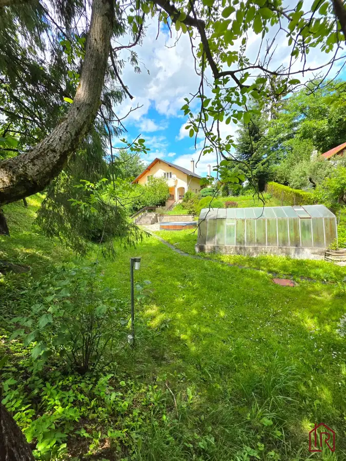
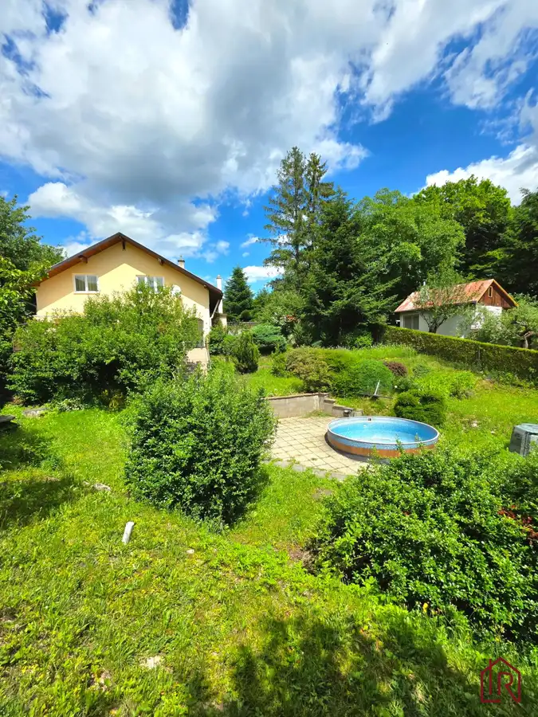
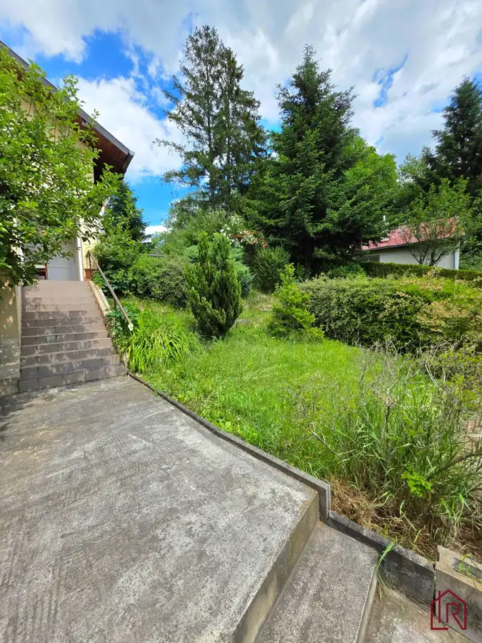
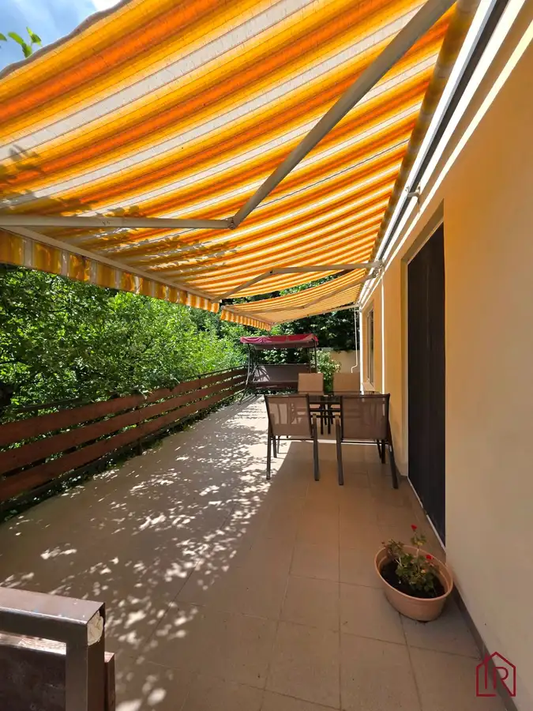
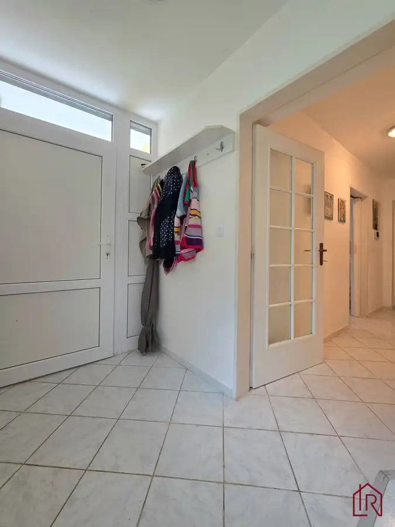
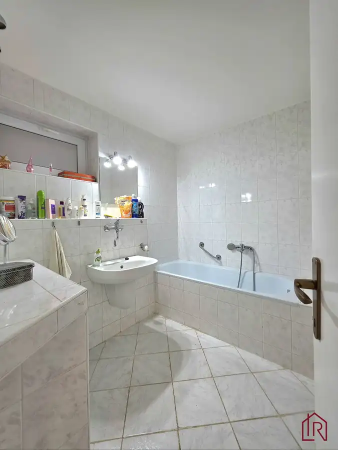
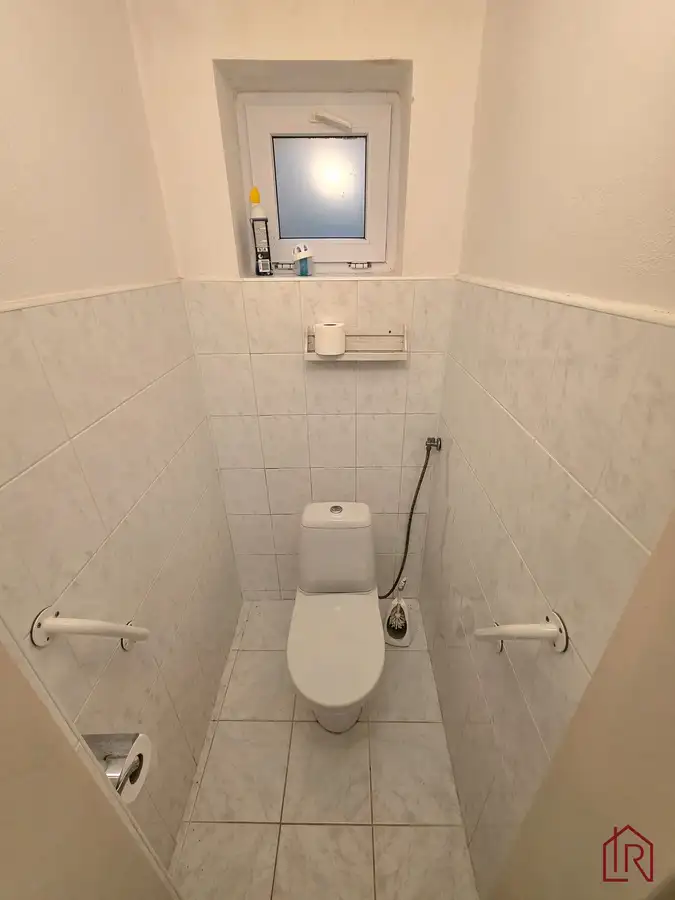
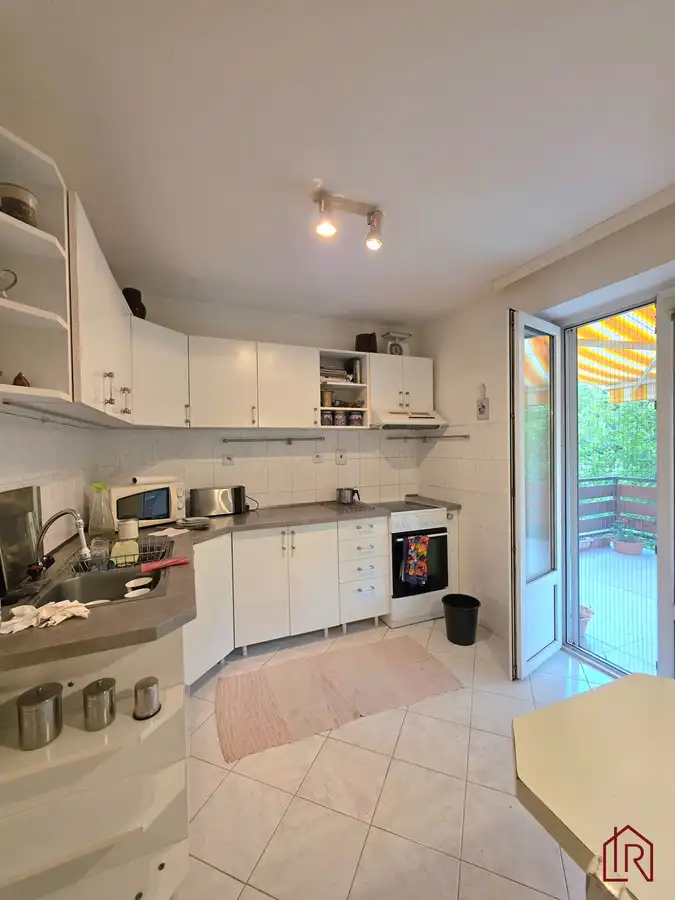
- Dispozícia4-izbový
- Plocha150 m²
- Poschodie0. z 2
- Stavpôvodný
- Vlastníctvoosobné
O nehnuteľnosti
Ponúkame na predaj priestrannú nehnuteľnosť vedenú na liste vlastníctva ako rekreačná chata, ktorá je však dlhodobo využívaná na celoročné bývanie a svojím dispozičným riešením zodpovedá rodinnému domu.
Interaktívny pôdorys nájdete na tejto stránke:
https://floorplanner.com/projects//spaceplanner
Nehnuteľnosť sa nachádza v pokojnej lokalite Hrabčany, v katastrálnom území Kostoľany nad Hornádom, len približne 5 minút jazdy autom od Košíc.
Virtuálna prehliadka pod nasledujúcim linkom. Potrebné skopírovať.
https://livetour.istaging.com/7ecebb83-6369-4c5d-ad6f-4e8ca3ac356d
Základné informácie:
- výmera pozemku: 901 m²
- zastavaná plocha: 83 m²/ úžitková plocha domu: približne 150 m²
- terasa pri obývacej izbe a hlavnom vstupe
- dvojpodlažná stavba
- možnosť prihlásenia trvalého pobytu
- bezprostredne pri nehnuteľnosti sa nachádza zastávka medzimestskej autobusovej dopravy
- cena: 250 000€
Dispozícia domu:
Prízemie:
- vstupná chodba
- priestranná obývacia izba s francúzskymi oknami
- kuchyňa s výstupom na terasu
- kúpeľňa
- samostatná toaleta
- technická miestnosť
- skladový priestor
Poschodie:
- 3 samostatné spálne
- kúpeľňa so sprchovacím kútom
- samostatná toaleta
- šatník
Technické parametre:
- stavba kolaudovaná v roku 1999
Informácie vychádzajúce z technickej správy:
- murovaná konštrukcia, obvodové murivo z pórobetónových tvárnic, vnútorné deliace priečky z tehál, železobetónové vence, keramický strop nad prízemím, drevený strop podkrovia so sadrokartónovým obkladom, strešná krytina – asfaltový šindeľ, dom je takmer celý izolovaný proti zemnej vlhkosti, plastové okná s izolačným dvojsklom, sadrokartónové podhľady, plávajúce podlahy, dlažby v kúpeľniach, kuchyni a vstupných priestoroch
Vykurovanie:
Dom disponuje dvomi zdrojmi vykurovania: elektrický kotol, kotol na pelety (prízemie- podlahové vykurovanie, poschodie- radiátory)
Technická miestnosť je vybavená: elektrickým kotlom, zásobníkom teplej úžitkovej vody, kompletnými rozvodmi vykurovacieho systému
Inžinierske siete:, elektrina, studňa s dostatkom vody, využívaná aj na pitie (skružová), odpad riešený čističkou, internet a TV (skylink)
Pozemok a exteriér:
- pozemok (mierny svah) o výmere 901 m²
- kompletne odvodnený pozemok s kontrolnými a čistiacimi bodmi v systéme
- kamerový systém zabezpečujúci dom
Na pozemku sa nachádza:
- náradovňa, skleník, vonkajšia technická miestnosť, provizórna garáž, bazén
Prevádzkové náklady
- mesačné zálohové platby približne do 200€
- pri hospodárnom využívaní vykurovania vznikali vlastníkom ročné preplatky približne 800€
Právny stav a financovanie:
Nehnuteľnosť je evidovaná ako rekreačná chata, pričom je možné v nej mať prihlásený trvalý pobyt.
Financovanie:
- nehnuteľnosť je evidovaná ako rekreačná chata
- nie je možné financovanie štandardnou hypotekárnou formou založenou na kupovanej nehnuteľnosti
- možné riešenie založením druhej nehnuteľnosti, prípadne vlastnými zdrojmi
- s vhodným riešením radi poradíme
Výhody nehnuteľnosti:
Priestranná nehnuteľnosť v tesnej blízkosti Košíc, ktorá ponúka pokojné bývanie v objatí prírody. Kombinácia kultivovanej záhrady, okolitej zelene a výbornej dostupnosti do mesta, vytvára ideálne miesto pre milovníkov prírody, záhradkárčenia a pokojného životného štýlu.
KONTAKT: Pre bližšie informácie kontaktujte kedykoľvek certifikovaného rodinného realitného makléra: Lucia Talianová, , (certifikovaný maklér NARKS - Národná asociácia realitných kancelárií Slovenska).
Viac ako nehnuteľnosť. DOMOV
V Impulz Real spájame profesionálny rozum s ľudským srdcom. Zabezpečíme Vám nielen kompletný a bezpečný servis (advokát, financovanie, energie) – kvalita je náš štandard, ale hlavne pochopenie pre Váš príbeh. Pomôžeme Vám s predajom aj Vašej nehnuteľnosti, prípadne nájsť domov, ktorý si zamilujete, a postaráme sa o Vás počas celého procesu.
„Sme realitní experti so zmyslom pre rodinu.“
IMPULZ REAL – Vaša Rodinná Realitka, ktorej DÔVERUJETE
Parametre
- Rozloha pozemku
- 901 m²
- Zastavaná plocha
- 83 m²
- Celková rozloha
- 901 m²
- Úžitková plocha
- 150 m²
- Poschodie
- prízemie
- Počet poschodí
- 2
- Počet izieb
- 4
- Vlastníctvo
- osobné
- Stav
- pôvodný
- Status
- aktívne
- Voda
- studňa
- El. napätie
- 230V
- Plyn
- nie
- Kanalizácia
- ČOV
- Internet
- iné
- Kúpeľňa
- vaňa a sprchovací kút
- Vykurovanie
- vlastné – kombinované
- Balkón
- nie
- Lódžia
- nie
- Terasa
- áno - 1
- Pivnica
- áno
- Garáž
- nie
- Parkovanie
- vonkajšie
- Inžinierske siete
- áno
- Postavené z
- Zmiešané
- Zariadenie
- zariadený
- Zateplený objekt
- áno
- Strecha
- pôvodná
- Bazén
- exteriérový
- Krb
- nie
- Klimatizácia
- nie
- Energetický certifikát
- áno
- Predzáhradka
- nie
- Bezbariérový prístup
- nie
- Okná
- plastové
- Terén
- mierny svah
- Prístupová cesta
- asfaltová cesta
- Dátum zverejnenia
- 2026-06-12
Kde to je
Mohlo by Vás zaujímať
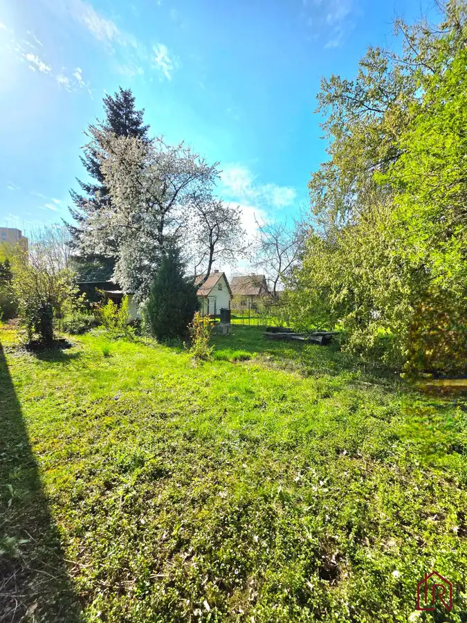
ZáhradyNové 75 000 €: Záhrada s chatkou, Košice – Krásna, 716 m², elektrina mestská časť Krásna, Košice 716 m²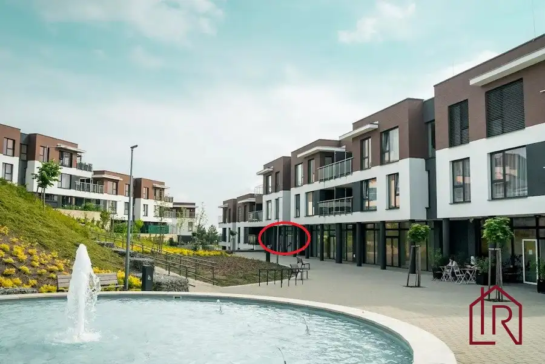
Nebytové priestoryNové 150 000 €: Investičný priestor, Lorinčík, 4,3 % výnos mestská časť Lorinčík, Košice 52.23 m²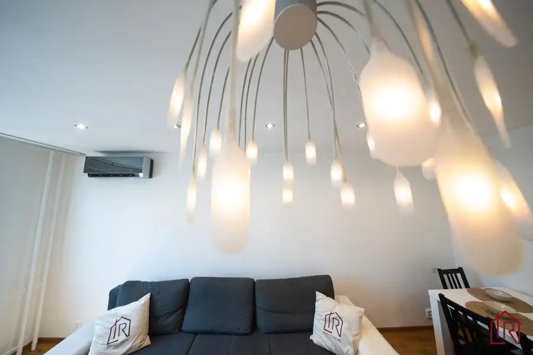
BytNové 249 900 €4 - izbový byt, Košice Terasa, Bernolákova, 82 m² Západ, Košice 4-izbový78 m²3. podlažie